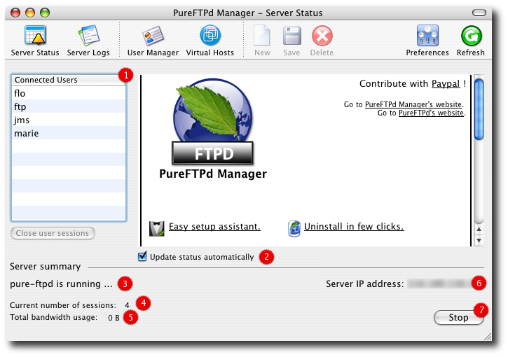
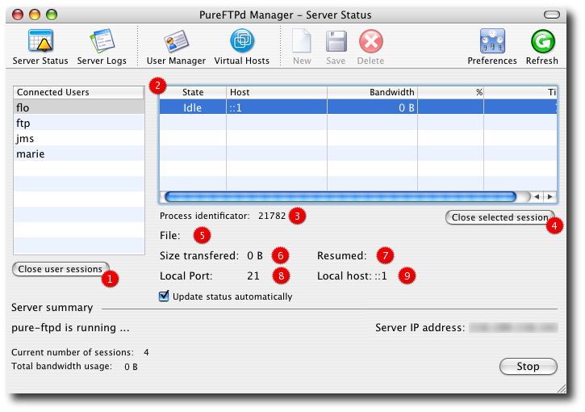

PureFTPd Manager - Server StatusPureFTPd Manager's server status gives you informations on your server activity in real time. It enables you to quickly start and stop your server and displays informations on users currently connected to your computer. You can use it to monitor transfers and terminate users' connections if needed. Have a look at the screenshots to learn more from the informations you can get from this module. 1. Server Status - Standard View

2. To update your server status automatically, be sure to check this box. If unchecked, you would need to manually refresh your status using the Refresh button located at the top right of this window. 3. "To be or not to be" running pure-ftpd ... 4. Display the number of simultanious users connected to your system. 5. Display the total bandwidth usage. 6. Display your server's public IP address. You can pass this on to your friends so they can access your files. If your FTP box cannot connect to the Internet, no address is displayed. 7. Start / Stop your FTP server. 2. Server Status - Control Users' Connections Using the Server Status module, you can easily review your user traffic and control connections to your server and either close a particular or all user's sessions at your convenience. The next screenshot should help you understand the various informations displayed when a user is selected in the Connected Users table.

2. Selecting a user from the Connected Users table will display additional informations regarding its presence on your server. For now let's focus on the table. It is composed of 5 columns and consolidate the sessions a user opened to your computer. 4. A Close selected session button is enabled when you select a session from the sessions' table. It lets you close a particular user's session at your convenience, sending a SIGTERM to the child process. 5. When a user is actually transfering something, it displays which file is involved. 6. Displays the amount of bytes transfered. 7. Tells you if a session was resumed or not. 8. Displays the local port a session was started on. 9. Displays the host address a session was started on. Read more ...
|